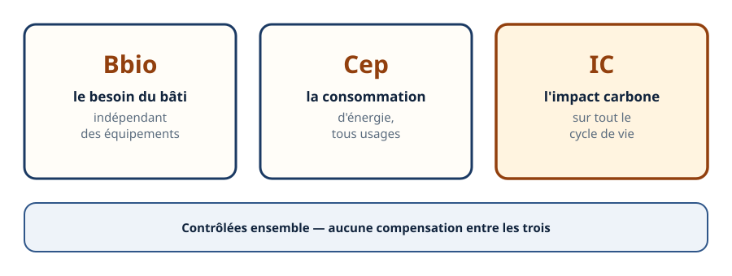
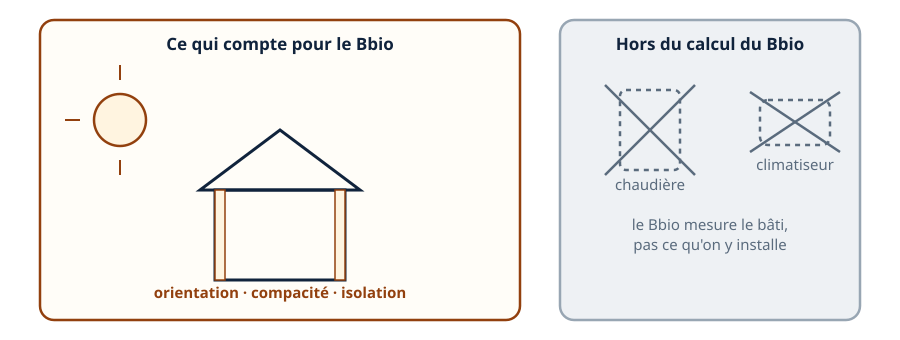
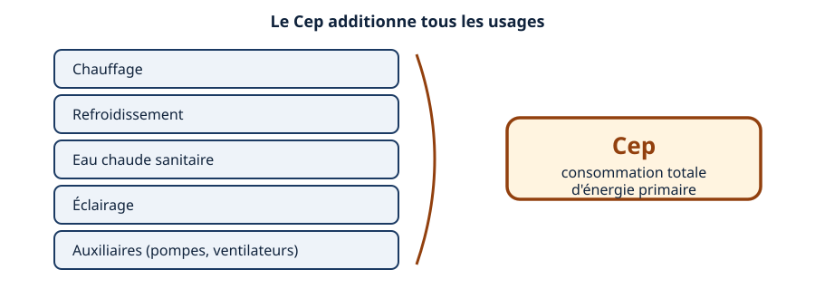
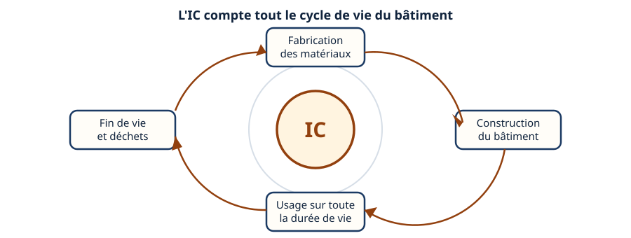
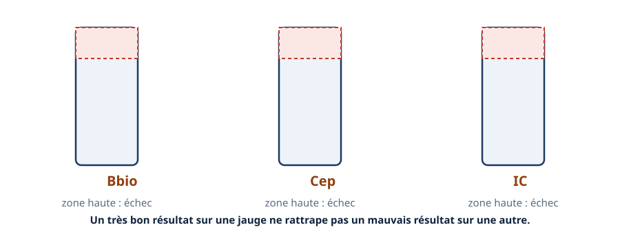
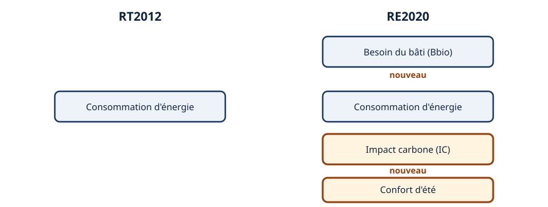
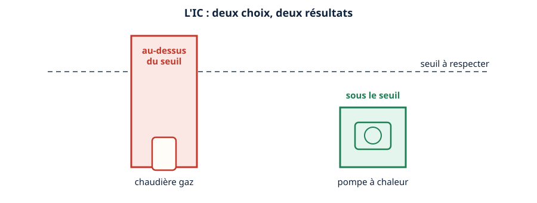
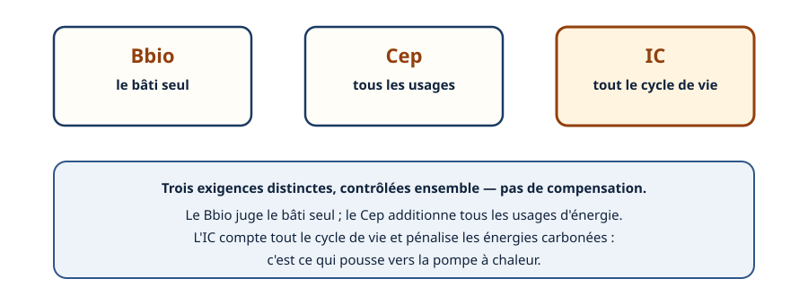

Mini-station commentée · 8 écrans et 4 questions · environ 10 minutes
Objectif
À la fin de la station, vous savez nommer et distinguer les trois exigences de la RE2020 — Bbio, Cep, IC —, dire pourquoi elles se contrôlent ensemble sans compensation, et expliquer pourquoi l'impact carbone pousse le choix vers la pompe à chaleur.
Chaque écran peut être expliqué à voix haute : le bouton « Écouter » commente ce que vous voyez. Rien n'est dit qui ne soit aussi écrit.
1 / 12
Écran 1 sur 8
Les trois exigences de la RE2020
La RE2020 ne se résume pas à un chiffre. Elle repose sur trois exigences distinctes : le Bbio, le besoin bioclimatique du bâti ; le Cep, la consommation d'énergie ; l'IC, l'impact carbone.
Les trois écrans suivants détaillent chacune. Retenez déjà ceci : elles ne se compensent pas entre elles.

Trois exigences distinctes — la station détaille chacune.
Écran 2 sur 8
Bbio : le besoin bioclimatique
Le Bbio mesure la qualité du bâti — orientation, forme compacte, isolation — indépendamment des équipements installés dedans.
Deux bâtiments identiques dans leur bâti ont le même Bbio, qu'on y installe une chaudière ou une pompe à chaleur. C'est justement pour ça qu'un Bbio existe à côté du Cep : il juge le bâti seul, avant tout choix d'équipement.

Le Bbio juge le bâti seul, avant tout choix d'équipement.
Écran 3 sur 8
Cep : la consommation d'énergie
Le Cep additionne tous les usages d'énergie du bâtiment : chauffage, refroidissement, eau chaude sanitaire, éclairage, auxiliaires.
C'est l'héritier direct de ce que mesurait la RT2012 — mais dans la RE2020, il n'est plus seul : il partage la place avec le Bbio et l'IC.

Le Cep additionne tous les usages — pas seulement le chauffage.
Écran 4 sur 8
IC : l'impact carbone, une analyse de cycle de vie
L'IC est le volet le plus nouveau. Il ne mesure pas seulement l'énergie consommée pendant l'usage : il additionne l'impact carbone de la fabrication des matériaux, de la construction, de l'usage et de la fin de vie du bâtiment.
C'est ce qu'on appelle une analyse de cycle de vie — la même logique que la station « ACV & carbone », en préparation sur une autre sous-ligne.

L'IC remonte jusqu'à la fabrication des matériaux, et va jusqu'à leur fin de vie.
Écran 5 sur 8
Trois seuils distincts, pas de compensation
Chaque exigence a son propre seuil à ne pas dépasser. Ce n'est pas une moyenne des trois : c'est un contrôle indépendant sur chacune.
Concrètement : un bâtiment excellent sur l'IC mais qui dépasse son seuil de Bbio ne passe pas. Le très bon résultat sur l'un ne rattrape jamais un dépassement sur l'autre.

Trois contrôles indépendants — jamais une moyenne des trois.
Écran 6 sur 8
Ce qui change vraiment par rapport à la RT2012
La RT2012 ne contrôlait que la consommation d'énergie. La RE2020 reprend ce volet dans le Cep, et en ajoute trois autres : le besoin du bâti, l'impact carbone, et le confort d'été.
Ce n'est donc pas un simple durcissement du même calcul : c'est un élargissement du périmètre mesuré.

Un élargissement du périmètre mesuré, pas un simple durcissement.
Écran 7 sur 8
Pourquoi ça pousse vers la pompe à chaleur
L'IC compte l'impact carbone de l'énergie utilisée sur toute la durée de vie du bâtiment. Une énergie carbonée pèse plus lourd dans ce calcul.
À bâti identique, choisir une pompe à chaleur plutôt qu'une chaudière au gaz change directement le résultat sur l'IC — et donc la capacité du projet à passer sous le seuil.

À bâti identique, le choix de l'équipement change le résultat sur l'IC.
Écran 8 sur 8
Bilan et le réflexe
La RE2020 repose sur trois exigences distinctes : Bbio, Cep, IC.
Le Bbio juge le bâti seul, indépendamment des équipements.
Le Cep additionne tous les usages d'énergie — l'héritier de la RT2012.
L'IC compte tout le cycle de vie, et pousse vers la pompe à chaleur.
Les trois seuils sont contrôlés séparément : jamais de compensation entre eux.
Le réflexe : trois exigences, trois contrôles — jamais une moyenne des trois.

Trois exigences, contrôlées ensemble, sans compensation.
Question 1 sur 4
Que mesure le Bbio ?
Rappel de l'écran 2 — le bâti seul, sans les équipements.
Question 2 sur 4
Le Cep additionne quels usages d'énergie ?
Rappel de l'écran 3 — tous les usages, pas seulement le chauffage.
Question 3 sur 4
Excellent sur l'IC, mais Bbio dépassé : le projet passe-t-il ?
Rappel de l'écran 5 — pas de compensation entre les trois exigences.
Question 4 sur 4
Pourquoi l'IC pousse-t-il vers la pompe à chaleur ?
Rappel de l'écran 7 — le choix de l'équipement change le résultat sur l'IC.
Les correspondances de la station
Pourquoi une RT ? (même sous-ligne)
— l'histoire qui mène à la RE2020, et ce que la RT2012 mesurait déjà.
Le confort d'été (même sous-ligne)
— le détail du volet DH, seulement annoncé ici à l'écran 6.
ACV & carbone (sous-ligne Impact environnemental, en préparation)
— l'indicateur IC de la RE2020 est de l'analyse de cycle de vie.
Les deux premières stations sont ouvertes : les liens fonctionnent. La
troisième est en préparation sur le plan du réseau.